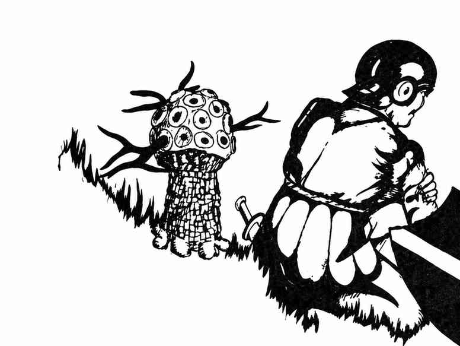

紫色真菌 · Fungi, Violet
 |
|
紫色真菌的生长形态类似尖啸蕈，通常（75%）与它们一同出现。尖啸蕈不受紫色真菌触碰影响；两者的生存彼此补足。紫色真菌喜欢生长在腐烂的动物尸体上。每株有 1–4 根枝条；有动物进入其 1–4 尺范围时，枝条便会抽打。枝条分泌物会在一个近战轮内使肉体腐烂，除非目标通过对抗毒素的豁免检定或接受医疗疾病。真菌高度为 4–7 尺，枝条长度随体型而异：最小者枝条长 1 尺，5 尺高者枝条长 2 尺，依此类推；任何体型都可能有 1–4 根枝条。